I can design it for you
What motivates me?
Hello, let me introduce myself...
I am Sofía Franco, a UX/UI
designer, I am passionate about design, research and keep improving
daily.
It motivates me a lot to see my finished projects and all the journey I
go through to reach the final phase, from the first sketches made with
paper and pencil, going through my first digital wireframes, choosing
all the creative part of the design, the color palette, typography,
images, etc., I really love what I do.
